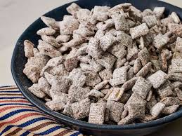

Home

Puppy Chow Recipe
Also known as Muddy Buddies, is a popular sweet
crunchy blend with peanut butter and chocolate,
coated with powdered sugar. No baking required, easy to make,
and ready when you are.
Lets take a dive into how to properly make some puppychow,
and fill the sweet cravings us humans desire!
The Recipe consist of peanut butter, chex mix, chocolate of your choosing,
and powdered sugar. The peanut butter and chocolate will be melted into
thick sweetness to stick onto the chex then covered in snowy powdered sugar.
Ingredients
- Chocolate of your choice
- Rice Cereal, chex is a good choice but any rice cereal works
- Peanut Butter
- Powdered Sugar
Steps to Make Puppy Chow!
- Evenly mix chocolate chips with peanut butter
and warm until liquidy enough to stir
- Stir the chocolate peanut butter together until its one smooth combo
- Put some of the cereal into a bowl and pour the chocolate peanut butter
mixture on top and alternate cereal and chocolate peanut butter mixture
until all ingredients are used up!
Make sure not to use too much
cereal compared to the chocoPB mix. It'll ruin the puppychow.
- Mix it all together and make sure it's fully coated let it cool off, like in a fridge
- Once the mixture is just below room temperature, but not hard, add the powdered sugar
until there is a thin coating and some of the pieces start seperating
- Let the muddy buddies cool off for about 15 to 20 minutes.
- Put the muddy buddies in the fridge for about another 30 minutes
- Server this masterpeice at room temperature.